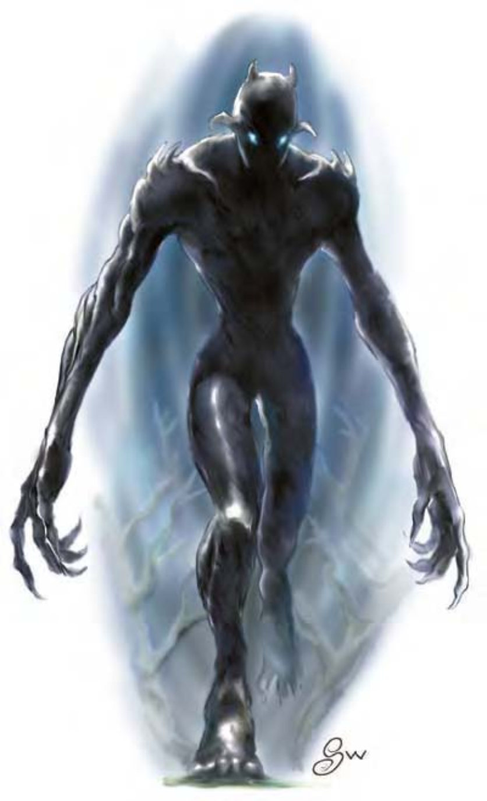

他们看起来像是高过屋顶的人形巨人，纯粹由黑暗构成。他们身上一丝不挂，皮肤光滑，身体没有毛发也不分性别。
自走夜影具有人形，出没于黑暗之中。自走夜影高20英尺，重约12000磅。
| 资料栏位 | 自走夜影 (Nightwalker) 超大型不死生物 (外界) |
| 生命骰 | 21d12+42 (178HP) |
| 先攻 | +6 |
| 速度 | 40英尺 (8格)、飞行20英尺 (不良) |
| 防御等级 | 32 (-2体型、+2敏捷、+22天生)、接触10、措手不及30 |
| 基本攻击/擒抱 | +10 / +34 |
| 攻击 | 挥击+24近战 (2d6+16) |
| 全力攻击 | 2挥击+24近战 (2d6+16) |
| 占据/触及 | 20英尺 / 15英尺 |
| 特殊攻击 | 碾压物品、亵渎灵光、邪恶凝视、类法术能力、召唤不死生物 |
| 特殊能力 | 憎恶白昼、伤害减免15 / 银且魔法、黑暗视觉60英尺、对寒冷免疫、法术抗力29、心灵感应100英尺、不死特性 |
| 豁免 | 强韧+11、反射+11、意志+19 |
| 属性 | 力量38、敏捷14、体质―、智力20、感知20、魅力18 |
| 技能 | 专注+28、交涉+6、躲藏+18*、神秘知识+29、聆听+29、潜行+26、搜索+29、察言观色+29、法术辨识+31、侦察+29、生存+5 (追踪+7) |
| 专长 | 顺势斩、寓守于攻、战斗反射、强韧加强、精通卸除武器、精通先攻、猛力攻击、类法术能力瞬发 (“邪影击”) |
| 环境 | 幽影界 |
| 组织 | 单独或成双 |
| 宝藏 | 标准 |
| 阵营 | 总是混乱邪恶 |
| 进化 | 22-31HD (超大型)；32-42HD (巨型) |
| 等级修正值 | ― |
自走夜影藏身于黑暗之中，等待敌人一不留神就进行伏击。
在计算伤害减免时，自走夜影的天生武器视为魔法武器。
碾压物品 (超自然)：除了神器之外，其他大型以下的武器或物品，即使为魔法物品，自走夜影都可捡起并用两手压碎。自走夜影必须通过“卸除武器”检定才能抢到敌人身上的配件，并通过强韧检定 (DC=34) 才可压碎。豁免检定DC的调整值与力量调整值相同。
邪恶凝视 (超自然)：恐惧，30英尺。对上自走夜影目光时，需通过意志检定 (DC=24)，否则会被麻痹附加恐惧1d8轮。无论检定是否成功，24小时内都不会再受同一个自走夜影的凝视影响。这属于影响心灵的恐惧效果，豁免检定DC的调整值与魅力调整值相同。
类法术能力：随意施展――“疫病术” (DC=18)、“深幽黑暗术”、“侦测魔法”、“高等解除魔法”、“加速术”、“识破隐形”、“邪影击” (DC=18)；每天3次――“困惑术” (DC=18)、“怪物定身术” (DC=19)、“隐形”；每天1次――“寒冰锥” (DC=19)、“死亡一指” (DC=21)、“异界传送” (DC=21)。施法者等级21。豁免检定DC的调整值与魅力调整值相同。
召唤不死生物 (超自然)：自走夜影每晚可召唤不死生物1次：7-12个幽影、2-5个高等幽影或1-2个惧栗缚灵。不死生物会在1d10轮内降临，服务1小时或直至被释放为止。
技能：*当藏于黑暗区域时，自走夜影进行“躲藏”检定具有+8种族加值。
自走夜影智力异于常人，能将所有能力发挥到极致。他喜好使用类法术能力来分散或击倒敌人，再靠近落单的对手发动攻击。
战斗前：自走夜影随时具有“识破隐形”效果，并使用“加速术”与“隐形”备战。
第1轮：移进30英尺内并发动凝视攻击、“困惑术”或“怪物定身术”，同时瞬发“邪影击”。
第2轮：施展“死亡一指”对付施法者，并瞬发“邪影击”。
第3轮：上前与敌人交锋，并试图卸除敌人战士的武器。
第4轮：碾压被卸除的武器（若之前卸除失败，则改用凝视攻击）。
第5轮：全力攻击被卸除武器的对手或邻近施法者。